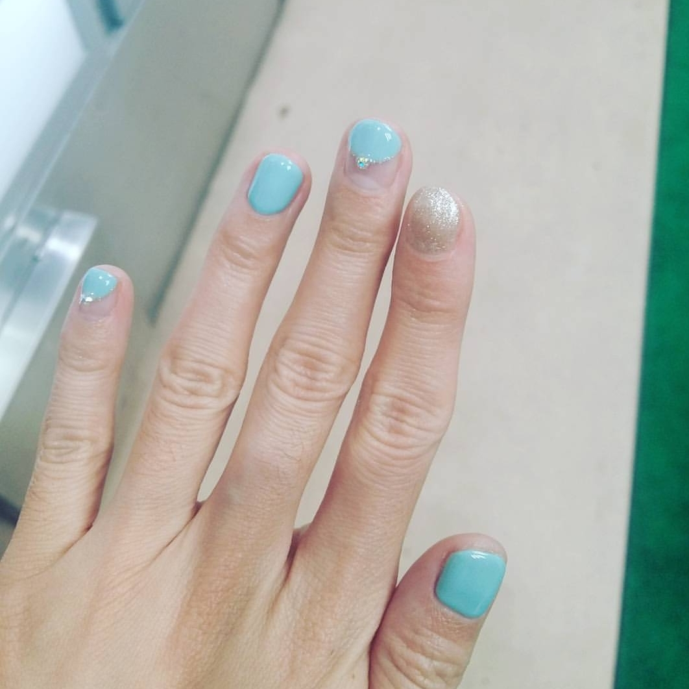
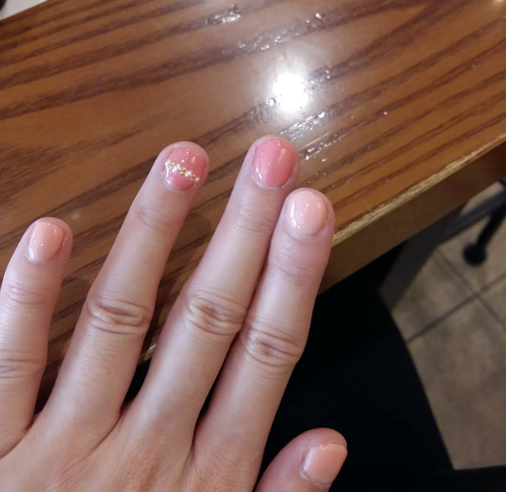
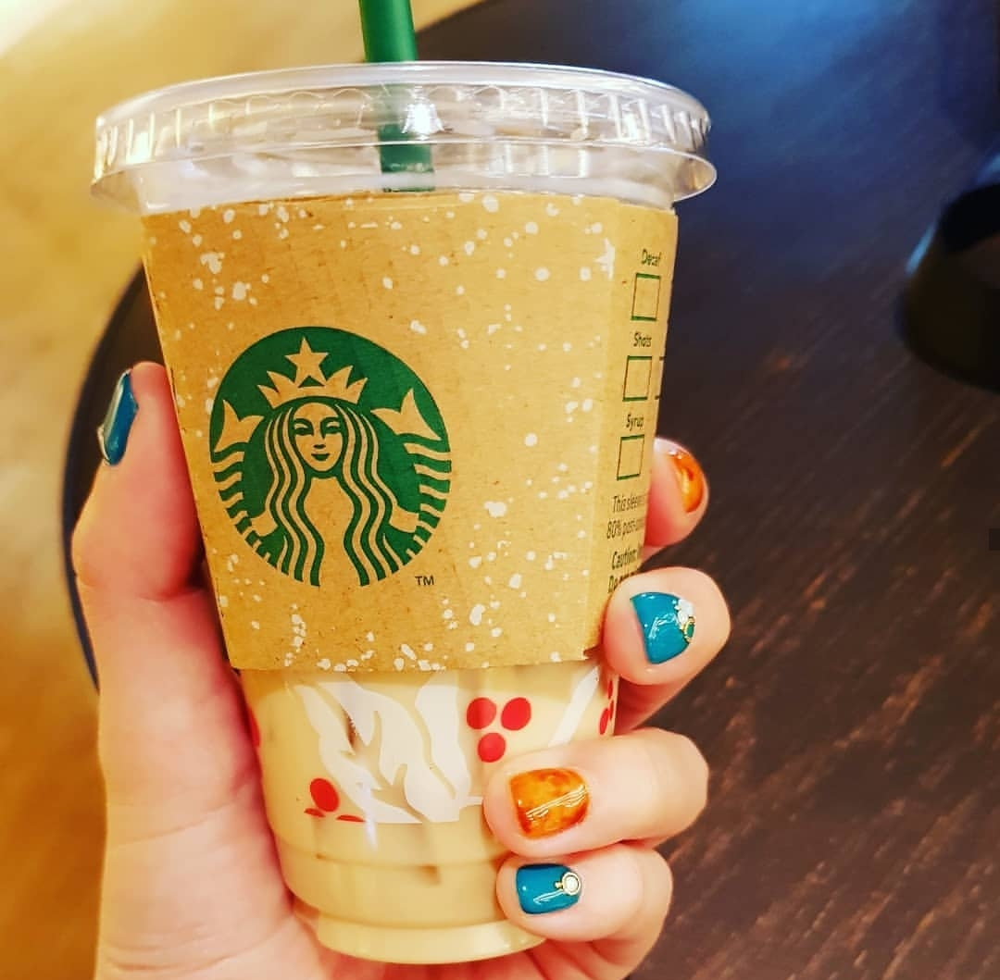
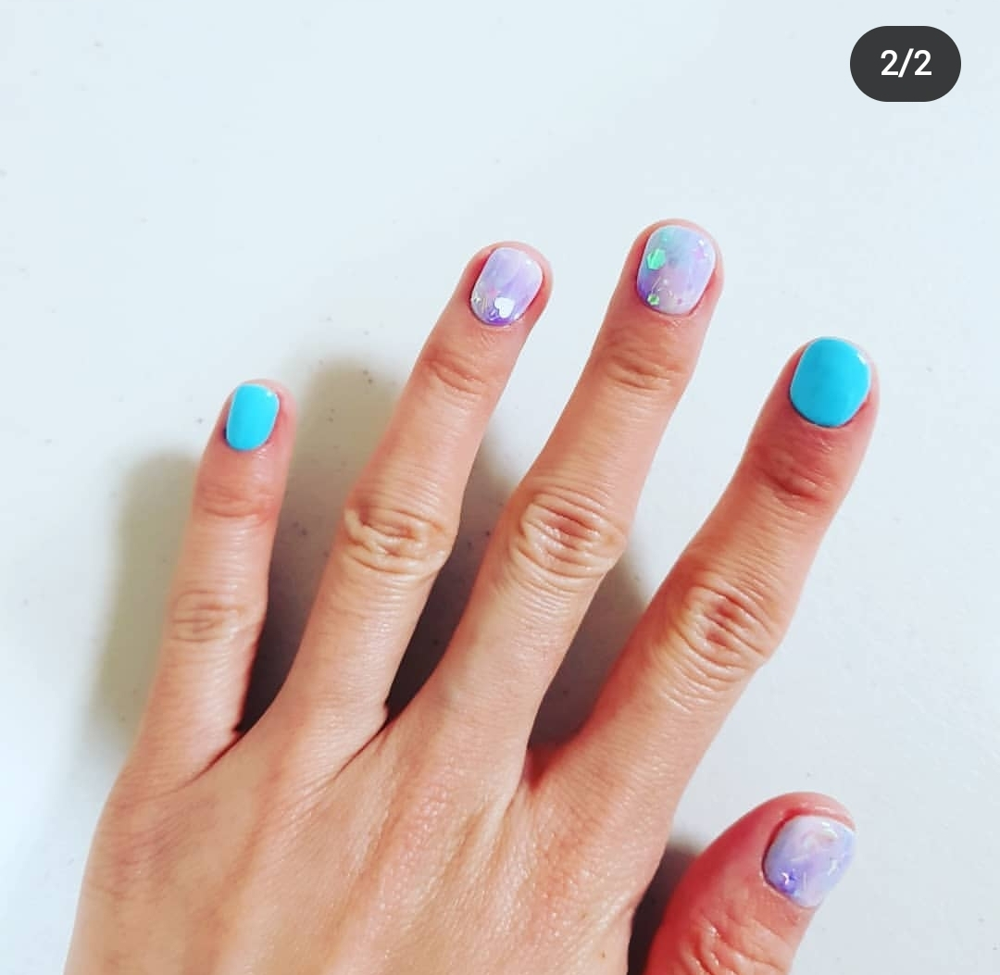
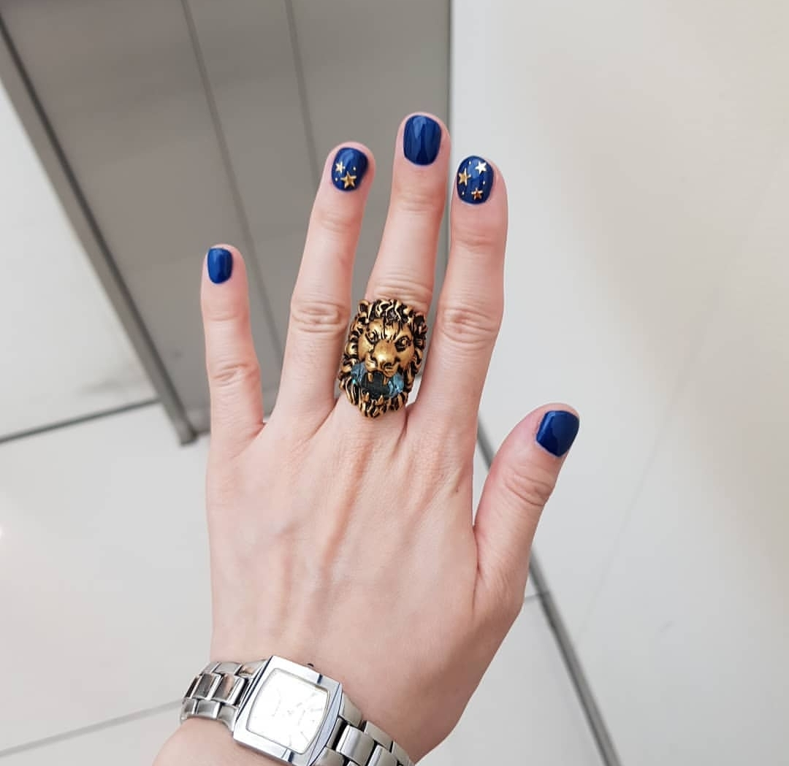
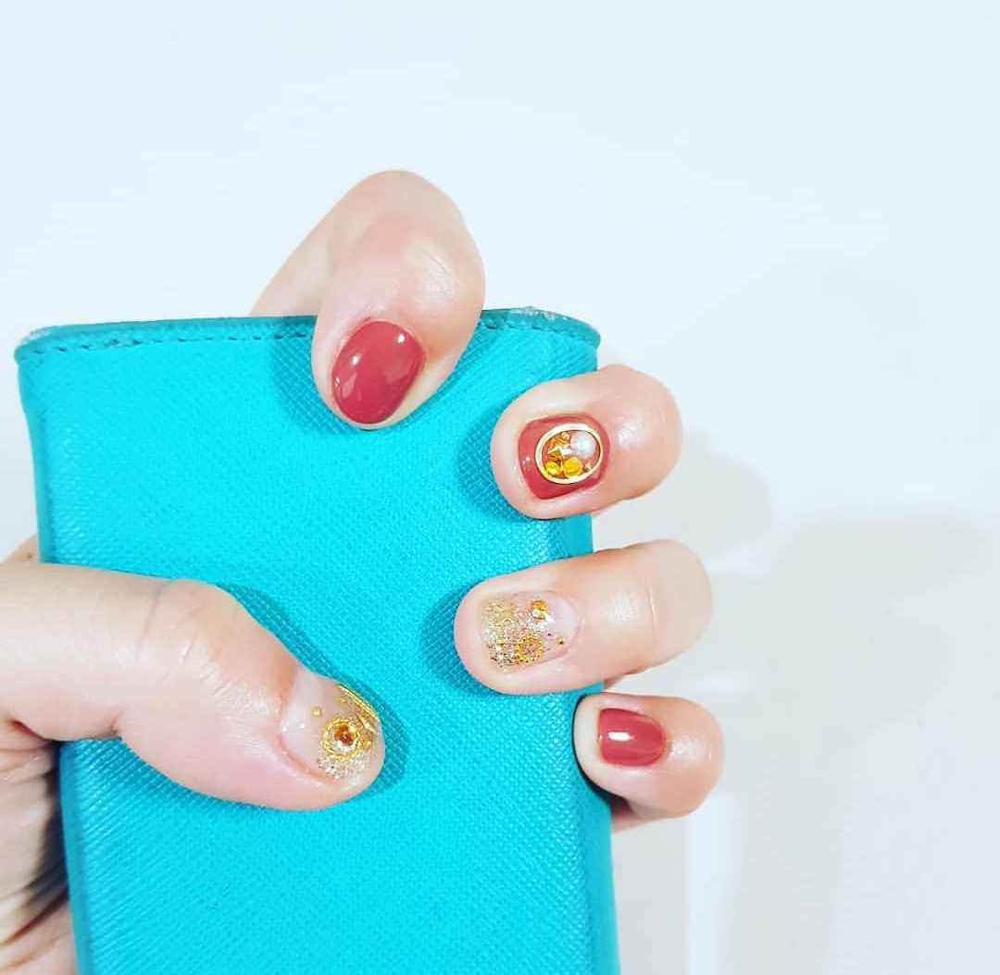
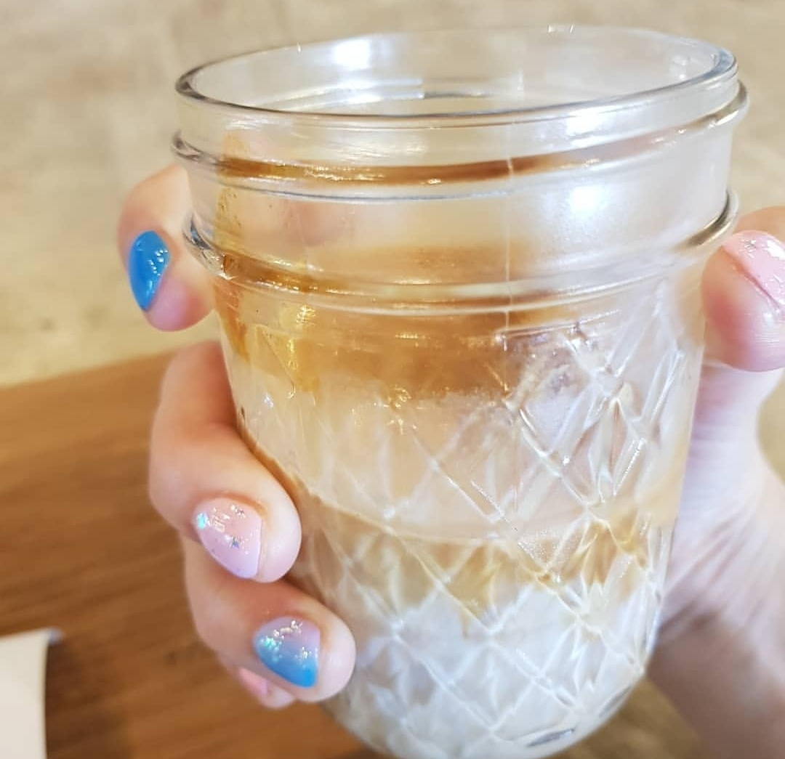
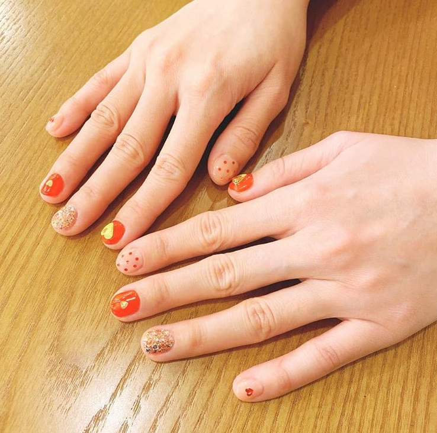

손톱을 엄청 짧게 자르는 편이라 젤네일을 안(못)하다가
일본 디자인페스타 참가할 때 한번 도전해 보고
이제는 여행갈 때 꼬박꼬박 네일을 받고있습니다 :3
여행지에서 사진찍을 때 손이 예쁘니 기부니가 좋더라구요
그동안 받은 네일아트 모음입니다. :D

처음 도전해 본 젤네일
도쿄, 신주쿠 네일샵

이것도 역시 도쿄에서 받은 네일

도쿄, 신주쿠
영국,아이슬란드 갈때 비행기타기전 동네서 받은 네일
아이슬란드 블루라군 리셉션 직원이 네일 예쁘다고 그랬어용//히힝

후쿠오카 네일샵
홍콩 여행 가기 전 역시 동네 네일샵에서 :3
태국 방콕 네일샵 - 네일프로젝트방콕
한국분이 운영하는 곳입니다. 시술은 현지 직원분이 했구요
&
한국 돌아와서 네일 지우고 얼마 지나지 않아 인스타에서 너무 취향 저격인 네일아트를 발견하고
충동적으로 댕겨왔습니다.
홍대에 있는 sometanail 이란 곳이에요 :)
매장에 엄청 쪼매나고 귀여운 강아지 있어서 실컷 쓰다듬었습니다 ㅜㅜ 흑흑 행복했어 ㅜㅜ

빨강이 하트네일 함 해보고싶었는데
소원풀었습니다 :D :D
또 네일받고 여행가고싶다///////// 아님 여행가서 네일을 받던가///////////